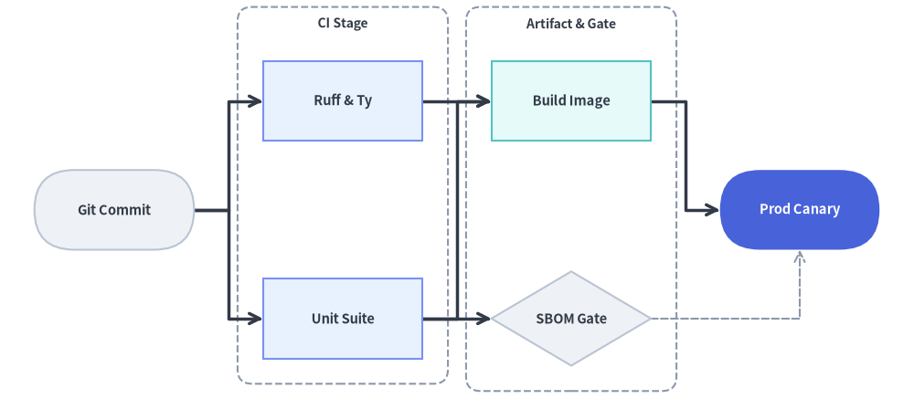
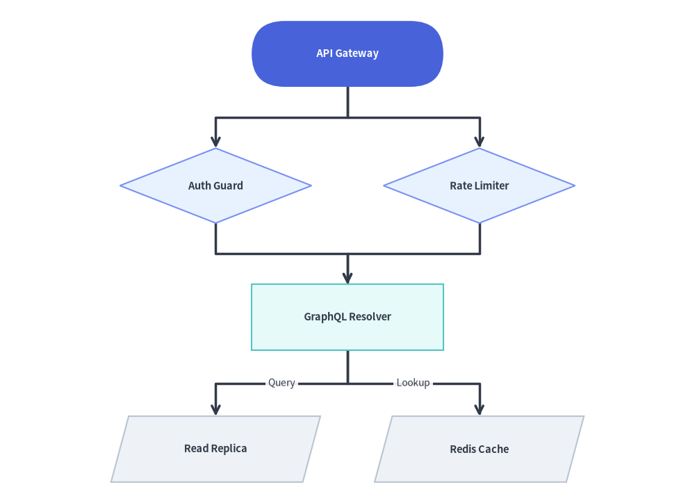

LayerGraph: Sugiyama Hierarchical DAGs & Pipelines
LayerGraph implements a Sugiyama-style layered Directed Acyclic Graph (DAG) coordinate solver—combining DFS cycle breaking, longest-path topological rank assignment, barycenter edge-crossing minimization, and Manhattan orthogonal routing.
It is the ideal coordinate calculator for CI/CD pipelines, ETL / data lineage graphs (dbt, Airflow), build dependency graphs, and multi-stage workflows where nodes progress through sequential ranks from left-to-right (direction="LR") or top-to-bottom (direction="TB"). Pair layout = g.get_layout() with FlowDiagram (Start, Process, Decision, Data, End) or drawlib.shapes and drawlib.lines to render rich workflow pipelines.

Source Code
from drawlib.canvas import save, setup
from drawlib.graph import LayerGraph
from drawlib.icons import phosphor
from drawlib.lines import lines
from drawlib.shapes import rectangle
from drawlib.styles import Styles
from drawlib.text import text
setup(width=124, height=56)
# Step 1: Declare ranked pipeline topology & calculate coordinates
g = LayerGraph(
direction="LR",
rank_sep=16.0,
node_sep=7.0,
default_node_width=24.0,
default_node_height=12.5,
)
# Rank 0: Ingestion Cluster
g.node("events", layer=0)
g.node("orders", layer=0)
g.cluster("ingest_box", ["events", "orders"], padding=3.5, header_height=4.0)
# Rank 1: Stream Processing Focal Node
g.node("joiner", layer=1)
# Rank 2: Analytics Cluster
g.node("mart", layer=2)
g.node("features", layer=2)
g.cluster("analytics_box", ["mart", "features"], padding=3.5, header_height=4.0)
g.edge("events", "joiner")
g.edge("orders", "joiner")
g.edge("joiner", "mart")
g.edge("joiner", "features")
layout = g.get_layout(width=124.0, height=56.0, margin=7.5)
# Step 2: Render stage clusters, routed edges, cards, and icons
for cid, label in [("ingest_box", "Ingestion"), ("analytics_box", "Analytics")]:
c = layout.clusters[cid]
rectangle(c.xy, width=c.width, height=c.height, style=Styles.MutedDashed.patch(shape_r=2.0))
text((c.cx, c.top - 2.3), label, style=Styles.DarkBold.patch(text_size=10.0))
for e in layout.edges:
lines(e.points, arrow_head="->", style=Styles.DarkBold)
cards = [
("events", "\nClick Events", Styles.Neutral, Styles.DarkBold.patch(text_size=10.5), phosphor.globe, Styles.Dark),
("orders", "\nOrder Stream", Styles.Neutral, Styles.DarkBold.patch(text_size=10.5), phosphor.lightning, Styles.Dark),
("joiner", "\nStream Join", Styles.PrimaryFlat, Styles.WhiteBold.patch(text_size=10.5), phosphor.git_merge, Styles.White),
("mart", "\nRevenue Mart", Styles.PrimaryNeutral, Styles.DarkBold.patch(text_size=10.5), phosphor.chart_line_up, Styles.Primary),
("features", "\nFeature Store", Styles.SecondaryNeutral, Styles.DarkBold.patch(text_size=10.5), phosphor.database, Styles.Secondary),
]
for nid, label, box_st, txt_st, icon_fn, ic_st in cards:
n = layout.nodes[nid]
rectangle(n.xy, width=n.width, height=n.height, style=box_st.patch(shape_r=1.5), text=label, text_style=txt_st)
icon_fn((n.x, n.y + 2.3), width=4.2, style=ic_st)
save()
1. Constructor & Rank Pinning API
from drawlib.graph import LayerGraph
g = LayerGraph(
direction="LR", # "LR" (Left-to-Right) or "TB" (Top-to-Bottom)
rank_sep=14.0, # Fixed gap between layers (auto-scales if None)
node_sep=8.0, # Fixed gap between nodes in the same layer (auto-scales if None)
edge_routing="orthogonal", # "orthogonal" or "straight"
default_node_width=22.0,
default_node_height=12.0,
)
Parameter Reference
| Parameter | Type | Default | Description |
|---|---|---|---|
direction |
Literal["LR", "TB"] |
"LR" |
Flow progression axis ("LR" horizontal ranks or "TB" vertical ranks). |
rank_sep |
float | None |
None |
Fixed distance between successive layers/ranks. Auto-scales to canvas if None. |
node_sep |
float | None |
None |
Minimum distance between sibling nodes within the same layer. Auto-scales if None. |
edge_routing |
Literal["orthogonal", "straight"] |
"orthogonal" |
Edge path routing mode ("orthogonal" Z-bends or "straight" Euclidean lines). |
default_node_width |
float |
22.0 |
Default node width in canvas units. |
default_node_height |
float |
12.0 |
Default node height in canvas units. |
Automatic Topological Ranking vs. Explicit layer Pinning
By default, LayerGraph assigns each node's rank (0, 1, 2, ...) automatically from the longest incoming dependency path. When you want strict alignment across specific stages:
- Per-Node Pinning: Pass
layer: inttog.node(id, layer=2). - Batch Tier Pinning (
g.tier):
Pins a list ofg.tier( name: str, nodes: list[str], *, layer: int | None = None, ) -> Nonenodesto the same horizontal/vertical rank (layer). Undeclared node IDs innodesare automatically registered with default dimensions, and iflayeris provided, every node innodeshas itsnode.layerset tolayer. - Stage Clusters: Combine
g.tier(...)withg.cluster(id, nodes, padding=..., header_height=...)to calculate a stage boundary box around a rank.
2. Automatic DAG Workflow Rendered with FlowDiagram
In this example, LayerGraph.get_layout() automatically infers the 4 topological ranks of a data engineering lineage DAG (Sources → Staging → Feature Store / Aggregations → ML Serving) and minimizes edge crossings using barycenter ordering, while FlowDiagram renders ISO 5807 symbols (Data, Process, End) at the solved n.xy coordinates:
from drawlib.canvas import save, setup
from drawlib.diagrams.flow import Data, End, FlowDiagram, Process
from drawlib.graph import LayerGraph
from drawlib.styles import Styles
setup(width=126, height=50)
# Step 1: Declare DAG topology and solve coordinates automatically
g = LayerGraph(
direction="LR",
rank_sep=9.0,
default_node_width=23.0,
default_node_height=11.0,
)
g.edge("raw_events", "clean_events")
g.edge("raw_orders", "clean_orders")
g.edge("clean_events", "user_features")
g.edge("clean_orders", "user_features")
g.edge("clean_orders", "rev_rollup")
g.edge("user_features", "ml_ranker")
g.edge("rev_rollup", "ml_ranker")
layout = g.get_layout(width=126.0, height=50.0, margin=5.0)
# Step 2: Render ISO flowchart shapes at solved coordinates with FlowDiagram
flow = FlowDiagram(
node_style=Styles.Neutral,
edge_style=Styles.DarkBold,
edge_text_style=Styles.Dark.patch(text_size=10.0),
)
ts_dark = Styles.DarkBold.patch(text_size=10.5)
ts_white = Styles.WhiteBold.patch(text_size=10.5)
f_nodes = {
"raw_events": flow.add(Data("Clickstream", *layout["raw_events"].size, style=Styles.Neutral, text_style=ts_dark), xy=layout["raw_events"].xy),
"raw_orders": flow.add(Data("Orders CDC", *layout["raw_orders"].size, style=Styles.Neutral, text_style=ts_dark), xy=layout["raw_orders"].xy),
"clean_events": flow.add(Process("Sessionize", *layout["clean_events"].size, style=Styles.PrimaryNeutral, text_style=ts_dark), xy=layout["clean_events"].xy),
"clean_orders": flow.add(Process("Deduplicate", *layout["clean_orders"].size, style=Styles.PrimaryNeutral, text_style=ts_dark), xy=layout["clean_orders"].xy),
"user_features": flow.add(Process("Feature Join", *layout["user_features"].size, style=Styles.SecondaryNeutral, text_style=ts_dark), xy=layout["user_features"].xy),
"rev_rollup": flow.add(Process("Revenue Mart", *layout["rev_rollup"].size, style=Styles.SecondaryNeutral, text_style=ts_dark), xy=layout["rev_rollup"].xy),
"ml_ranker": flow.add(End("Realtime Rank", *layout["ml_ranker"].size, style=Styles.PrimaryFlat, text_style=ts_white), xy=layout["ml_ranker"].xy),
}
for e in layout.edges:
flow.connect(f_nodes[e.src], f_nodes[e.dst], start_side="right", end_side="left")
flow.draw()
save()

3. Multi-Stage Pipeline with Explicit layer= and tier() Pinning
When building a release pipeline where specific nodes must align vertically even if they have different path depths, pin them explicitly via g.tier(..., layer=...) or g.node(..., layer=...) and wrap parallel stages in g.cluster(...):
from drawlib.canvas import save, setup
from drawlib.diagrams.flow import Decision, End, FlowDiagram, Process, Start
from drawlib.graph import LayerGraph
from drawlib.shapes import rectangle
from drawlib.styles import Styles
from drawlib.text import text
setup(width=126, height=58)
# 1. Solve ranked pipeline and stage cluster coordinates
g = LayerGraph(
direction="LR",
rank_sep=9.5,
default_node_width=22.0,
default_node_height=11.0,
)
# Stage 0: Source Trigger
g.node("git", layer=0)
# Stage 1: Parallel CI Checks (pinned via g.tier + enclosed in a cluster)
g.tier("ci_stage", ["lint", "pytest"], layer=1)
g.cluster("ci_cluster", ["lint", "pytest"], padding=3.5, header_height=4.0)
# Stage 2: Artifact Packaging & Security Gate
g.node("docker", layer=2)
g.node("sbom", layer=2, height=13.0)
g.cluster("pkg_cluster", ["docker", "sbom"], padding=3.5, header_height=4.0)
# Stage 3: Production Rollout (Hero focal node)
g.node("prod", layer=3)
g.edge("git", "lint")
g.edge("git", "pytest")
g.edge("lint", "docker")
g.edge("pytest", "docker")
g.edge("pytest", "sbom")
g.edge("docker", "prod")
g.edge("sbom", "prod")
layout = g.get_layout(width=126.0, height=58.0, margin=7.5)
# 2. Draw stage cluster boundaries (Z-Layer 1)
for cid, title in [("ci_cluster", "CI Stage"), ("pkg_cluster", "Artifact & Gate")]:
c = layout.clusters[cid]
rectangle(c.xy, width=c.width, height=c.height, style=Styles.MutedDashed.patch(shape_r=2.0))
text((c.cx, c.top - 2.3), title, style=Styles.DarkBold.patch(text_size=10.0))
# 3. Render workflow nodes & edges with FlowDiagram
flow = FlowDiagram(
node_style=Styles.Neutral,
edge_style=Styles.DarkBold,
edge_text_style=Styles.Dark.patch(text_size=10.0),
)
ts_dark = Styles.DarkBold.patch(text_size=10.5)
ts_white = Styles.WhiteBold.patch(text_size=10.5)
git = flow.add(Start("Git Commit", *layout["git"].size, style=Styles.Neutral, text_style=ts_dark), xy=layout["git"].xy)
lint = flow.add(Process("Ruff & Ty", *layout["lint"].size, style=Styles.PrimaryNeutral, text_style=ts_dark), xy=layout["lint"].xy)
pytest = flow.add(Process("Unit Suite", *layout["pytest"].size, style=Styles.PrimaryNeutral, text_style=ts_dark), xy=layout["pytest"].xy)
docker = flow.add(Process("Build Image", *layout["docker"].size, style=Styles.SecondaryNeutral, text_style=ts_dark), xy=layout["docker"].xy)
sbom = flow.add(Decision("SBOM Gate", *layout["sbom"].size, style=Styles.Neutral, text_style=ts_dark), xy=layout["sbom"].xy)
prod = flow.add(End("Prod Canary", *layout["prod"].size, style=Styles.PrimaryFlat, text_style=ts_white), xy=layout["prod"].xy)
flow.connect(git, lint, start_side="right", end_side="left")
flow.connect(git, pytest, start_side="right", end_side="left")
flow.connect(lint, docker, start_side="right", end_side="left")
flow.connect(pytest, docker, start_side="right", end_side="left")
flow.connect(pytest, sbom, start_side="right", end_side="left")
flow.connect(docker, prod, start_side="right", end_side="left")
flow.connect(sbom, prod, start_side="right", end_side="bottom", style=Styles.MutedDashed)
flow.draw()
save()

4. Top-to-Bottom (direction="TB") Ranked Hierarchy
Switching to direction="TB" flows topological layers vertically from top to bottom. Combine rank_sep and node_sep to control vertical spacing between ranks and horizontal spacing between sibling nodes in the same rank:
from drawlib.canvas import save, setup
from drawlib.diagrams.flow import Data, Decision, FlowDiagram, Process, Start
from drawlib.graph import LayerGraph
from drawlib.styles import Styles
setup(width=116, height=84)
# 1. Solve vertical TB ranked coordinates
g = LayerGraph(
direction="TB",
rank_sep=9.5,
node_sep=12.0,
default_node_width=32.0,
default_node_height=11.0,
)
g.node("gateway")
g.node("auth", height=12.5)
g.node("ratelimit", height=12.5)
g.node("resolver")
g.node("sql_db")
g.node("redis")
g.edge("gateway", "auth")
g.edge("gateway", "ratelimit")
g.edge("auth", "resolver")
g.edge("ratelimit", "resolver")
g.edge("resolver", "sql_db")
g.edge("resolver", "redis")
layout = g.get_layout(width=116.0, height=84.0, margin=6.0)
# 2. Render with FlowDiagram
flow = FlowDiagram(
node_style=Styles.Neutral,
edge_style=Styles.DarkBold,
edge_text_style=Styles.Dark.patch(text_size=10.0),
)
ts_dark = Styles.DarkBold.patch(text_size=10.5)
ts_white = Styles.WhiteBold.patch(text_size=10.5)
gw = flow.add(Start("API Gateway", *layout["gateway"].size, style=Styles.PrimaryFlat, text_style=ts_white), xy=layout["gateway"].xy)
auth = flow.add(Decision("Auth Guard", *layout["auth"].size, style=Styles.PrimaryNeutral, text_style=ts_dark), xy=layout["auth"].xy)
rl = flow.add(Decision("Rate Limiter", *layout["ratelimit"].size, style=Styles.PrimaryNeutral, text_style=ts_dark), xy=layout["ratelimit"].xy)
res = flow.add(Process("GraphQL Resolver", *layout["resolver"].size, style=Styles.SecondaryNeutral, text_style=ts_dark), xy=layout["resolver"].xy)
sql = flow.add(Data("Read Replica", *layout["sql_db"].size, style=Styles.Neutral, text_style=ts_dark), xy=layout["sql_db"].xy)
redis = flow.add(Data("Redis Cache", *layout["redis"].size, style=Styles.Neutral, text_style=ts_dark), xy=layout["redis"].xy)
flow.connect(gw, auth, start_side="bottom", end_side="top")
flow.connect(gw, rl, start_side="bottom", end_side="top")
flow.connect(auth, res, start_side="bottom", end_side="top")
flow.connect(rl, res, start_side="bottom", end_side="top")
flow.connect(res, sql, label="Query", start_side="bottom", end_side="top")
flow.connect(res, redis, label="Lookup", start_side="bottom", end_side="top")
flow.draw()
save()

5. Best Practices
- Choose
direction="LR"for Wide Pipelines,"TB"for Deep Hierarchies: Left-to-right ("LR") fits horizontal widescreen canvases and documentation columns naturally when a pipeline has 3–5 stages. Use"TB"when nodes have wide text labels or many parallel branches per rank. - Use
rank_sepandnode_sepfor Edge Labels: If you attach text labels to edges inFlowDiagram(or ate.mid_xywithtext()), settingrank_sep=12.0or higher guarantees generous clearance for the label badge. - Group Parallel Ranks with
g.cluster(): Wrapping nodes that share the samelayerinsideg.cluster(..., header_height=4.0)computes a stage boundary box (c.xy,c.width,c.height) that you can render as a dashed background container (Styles.MutedDashed) before callingflow.draw().